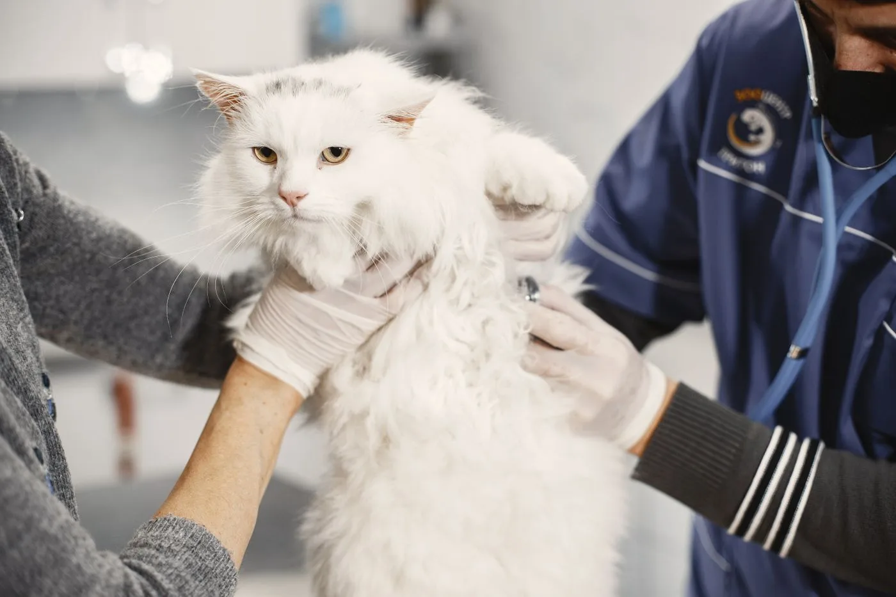

Приём терапевта
Осмотр, консультация и план дальнейших действий.
от 1 800 ₽ВЕТЕРИНАРНАЯ КЛИНИКА · МОСКВА
Приём врача, диагностика, вакцинация и лечение в одной клинике.

УСЛУГИ И ЦЕНЫ
Услуги для кошек и собак и их стоимость.
Осмотр, консультация и план дальнейших действий.
от 1 800 ₽Анализы, УЗИ и другие обследования.
от 1 500 ₽Плановые прививки для кошек и собак.
от 2 200 ₽Плановые операции и послеоперационное сопровождение.
от 5 000 ₽Осмотр и помощь при заболеваниях зубов.
от 2 000 ₽С 20:00 включительно до 08:00 по местному времени. С 08:00 действует дневной тариф.
ПРИЁМ В КЛИНИКЕ
На приёме важно не только осмотреть животное, но и ответить на вопросы его владельца.
Обсудим самочувствие питомца и причину обращения.
Проведём осмотр и при необходимости предложим обследование.
Расскажем о результатах и дальнейших шагах.
КОМАНДА
Специалисты клиники и направления их работы.
Первичный приём и профилактика.
УЗИ и диагностические обследования.
Плановая хирургия и восстановление.
ЭКСТРЕННАЯ СИТУАЦИЯ
Обратитесь в действующую ветеринарную клинику по телефону. Форма заявки не подходит для срочных обращений.
8 000 000-00-00ОТЗЫВЫ
Отзывы владельцев наших пациентов.
«На приёме всё подробно объяснили и помогли разобраться, что делать дальше. Мы с Мусей ушли спокойнее.»
Екатерина
владелица кошки Муси
«К нашему псу отнеслись бережно. На все вопросы ответили просто и без спешки.»
Алексей
владелец пса Марса
«Перед первой прививкой рассказали, как подготовиться и чего ожидать после приёма.»
Ольга
владелица кошки Тоси
ЗАЯВКА НА ПРИЁМ
Выберите удобные дату и время и оставьте заявку.
С 20:00 включительно до 08:00 по местному времени. В 08:00 начинается дневной тариф.
В срочной ситуации обратитесь в действующую клинику.
КОНТАКТЫ
Адрес, часы работы и телефон.
Условная точка на карте, не адрес клиники.